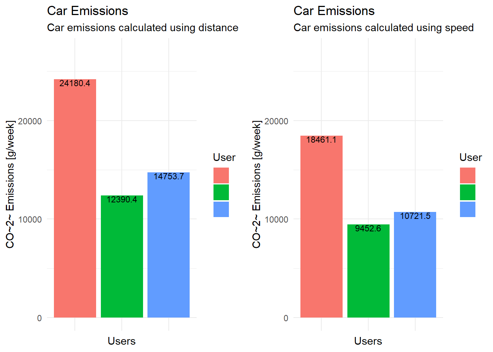
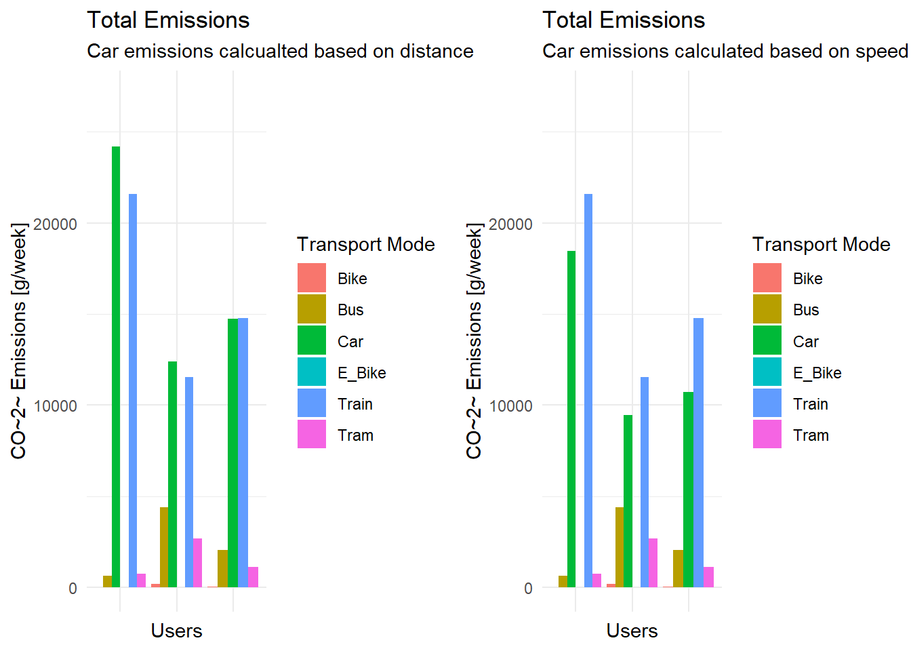

Code
# import libraries
library("dplyr")
library("ggplot2")
library("gridExtra")
library("lubridate")
library("readr")
library("raster")
library("sf")
library("terra")GEO880 - Computational Movment Analysis (UZH) / Patterns and Trends in Environmental Data (ZHAW)
# import libraries
library("dplyr")
library("ggplot2")
library("gridExtra")
library("lubridate")
library("readr")
library("raster")
library("sf")
library("terra")Road transportation is responsible for around 20 percent of global carbon dioxide emission whereof almost half of these emissions are caused by passenger road vehicles (Suarez et al., 2022). Due to the strongly negative impact of carbon dioxide emissions on climate change, they world widely receive gradually increasing concern (Dong et al., 2022). Driving behavior like acceleration as well as terrain characteristics such as an incline have valid impacts on carbon dioxide emissions (Dong et al., 2022; Suarez et al., 2022; Xu et al., 2022).
However, road traffic is not the only type of traffic that causes carbon dioxide emissions. Trains, trams, and – when also taking production emissions into account – even bicycles cause carbon dioxide emissions. Therefore, we will also consider these transportation modes. In this project, we analyze carbon dioxide emissions by different transportation types using different complexity levels as well as emission scenarios and compare these different setups with each other. We use validated movement data collected by the Posmo app from XY students of the course Computational Movement Analysis in Spring 2023 at ZHAW.
# define a function to load the posmo data
loadPosmoData <- function(filepath){
read_delim(filepath, delim = ",") |>
# we do not need the place name
subset(select = -c(place_name)) |>
# remove NA values for transport mode, we need a specified transport mode
filter(!is.na(transport_mode))
}# load all validated Posmo track files
posmo1 <- loadPosmoData("data/posmo_tracks/posmo_1.csv") # our own dataRows: 30643 Columns: 7
── Column specification ────────────────────────────────────────────────────────
Delimiter: ","
chr (4): user_id, weekday, place_name, transport_mode
dbl (2): lon_x, lat_y
dttm (1): datetime
ℹ Use `spec()` to retrieve the full column specification for this data.
ℹ Specify the column types or set `show_col_types = FALSE` to quiet this message.posmo2 <- loadPosmoData("data/posmo_tracks/posmo_2.csv") # our own dataRows: 35927 Columns: 7
── Column specification ────────────────────────────────────────────────────────
Delimiter: ","
chr (4): user_id, weekday, place_name, transport_mode
dbl (2): lon_x, lat_y
dttm (1): datetime
ℹ Use `spec()` to retrieve the full column specification for this data.
ℹ Specify the column types or set `show_col_types = FALSE` to quiet this message.posmo3 <- loadPosmoData("data/posmo_tracks/posmo_3.csv") # Posmo data tracking poolRows: 46305 Columns: 7
── Column specification ────────────────────────────────────────────────────────
Delimiter: ","
chr (4): user_id, weekday, place_name, transport_mode
dbl (2): lon_x, lat_y
dttm (1): datetime
ℹ Use `spec()` to retrieve the full column specification for this data.
ℹ Specify the column types or set `show_col_types = FALSE` to quiet this message.posmo <- full_join(posmo1, posmo2)Joining with `by = join_by(user_id, datetime, weekday, transport_mode, lon_x,
lat_y)`posmo <- full_join(posmo, posmo3)Joining with `by = join_by(user_id, datetime, weekday, transport_mode, lon_x,
lat_y)`# remove rows with NA in the coordinates
posmo <- posmo[!is.na(posmo$lon_x), ]
# convert to sf object and transform to LV95
posmo <- st_as_sf(posmo, coords = c("lon_x", "lat_y"), crs = 4326) |>
st_transform(2056)
# extract coordinates
posmo_coord <- st_coordinates(posmo)
# create one dataframe
posmo <- cbind(posmo, posmo_coord)# read Switzerland and the cantons
CH_boundaries <- st_read("data/swissboundaries3D/CH_boundaries.gpkg", crs = 2056)Reading layer `CH_boundaries' from data source
`C:\Users\anton\OneDrive\Dokumente\UZH_FS23\GEO880\Semester_Project\Semesterproject\data\swissboundaries3D\CH_boundaries.gpkg'
using driver `GPKG'
Simple feature collection with 1 feature and 22 fields
Geometry type: MULTIPOLYGON
Dimension: XYZ
Bounding box: xmin: 2485410 ymin: 1075268 xmax: 2833858 ymax: 1295934
z_range: zmin: 193.398 zmax: 4613.686
Projected CRS: CH1903+ / LV95CH_cantons <- st_read("data/swissboundaries3D/CH_cantons.gpkg", crs = 2056)Reading layer `CH_cantons' from data source
`C:\Users\anton\OneDrive\Dokumente\UZH_FS23\GEO880\Semester_Project\Semesterproject\data\swissboundaries3D\CH_cantons.gpkg'
using driver `GPKG'
Simple feature collection with 50 features and 23 fields
Geometry type: MULTIPOLYGON
Dimension: XYZ
Bounding box: xmin: 2485410 ymin: 1075268 xmax: 2833858 ymax: 1295934
z_range: zmin: 193.398 zmax: 4613.686
Projected CRS: CH1903+ / LV95# filter points that are within Switzerland
posmo <- st_filter(posmo, CH_boundaries)
# check if it worked
ggplot() +
geom_sf(data = CH_cantons, alpha = 0) +
geom_sf(data = posmo, aes(color = transport_mode), size = 0.8) +
coord_sf(datum = st_crs(2056)) +
labs(x = "E",
y = "N",
title = "Posmo tracks in Switzerland") +
guides(color = guide_legend(title = "Transport Mode"))+
theme_minimal()
# get all the transportation modes
unique(posmo$transport_mode) [1] "Car" "Walk" "Horse" "Tram" "Train"
[6] "Bus" "Airplane" "E_Bike" "Bike" "Run"
[11] "WheelChair" "Other1" "Cable_Car" # save transportation modes we need in a vector
transport_modes = c("Car", "Bus", "Train", "Tram", "Bike", "E_Bike")
# filter to only the transportation modes we need
posmo <- posmo |>
filter(transport_mode %in% transport_modes)ggplot(posmo, aes(color = transport_mode)) +
geom_sf()+
labs(x = "E",
y = "N",
title = "All posmo tracks for the analysis",
color = "Transport Mode")+
coord_sf(datum = st_crs(2056))+
theme_minimal()
# functions to determine moving window
movingWindowLag <- function(E, N, n){
sqrt((lag(E, n) - E)^2 + (lag(N, n) - N)^2)
}
movingWindowLead <- function(E, N, n){
sqrt((E - lead(E, n))^2 + (N - lead(N, n))^2)
}# calculate moving window
posmo <- posmo |>
mutate(
minus3 = movingWindowLag(X, Y, 3),
minus2 = movingWindowLag(X, Y, 2),
minus1 = movingWindowLag(X, Y, 1),
plus1 = movingWindowLead(X, Y, 1),
plus2 = movingWindowLead(X, Y, 2),
plus3 = movingWindowLead(X, Y, 3)
)
# calculate the mean step length
posmo <- posmo |>
rowwise() |>
mutate(
stepMean = mean(c(minus3, minus2, minus1, plus1, plus2, plus3))
) |>
ungroup()
# define a column 'static'
posmo <- posmo |>
ungroup() |>
mutate(static = stepMean < 215)# plot the trajectories if they are static or not
posmo |>
ggplot(aes(X,Y)) +
geom_point(aes(colour = static)) +
coord_fixed()+
labs(x = "E",
y = "N",
title = "Static and non-static points in the trajectories",
color = "Static")+
theme_minimal()
# remove static points
posmo <- posmo |>
filter(!static)# read the raster data using the terra package
dhm25 <- terra::rast("data/DHM25/dhm25_grid_raster.asc")
# set the raster crs to LV03
crs(dhm25) <- terra::crs("+init=EPSG:21781")# convert posmo data to LV03 to match the CRS of the dhm25
posmo_lv03 <- posmo |>
st_transform(crs = 21781) |>
subset(select = -c(X, Y))# extract the height information for each Posmo location
height_dhm <- extract(dhm25, posmo_lv03)
# join the height back to the posmo data
posmo$height <- height_dhm$dhm25_grid_raster# for cars: we have various sources
c_car <- c(130, 162, 122.3, 200)
# for buses
c_bus <- c(42, 108, 88.7, 25.15)
# for trains
c_train <- c(93, 110.9)
# for trams
c_tram <- c(80, 37)
# for e-bikes
c_ebike <- 14
# for bikes
c_bike <- 8
# create a look-up table for the different emission constants
constants_emission <- data.frame(
transport_mode = transport_modes,
stringsAsFactors = FALSE
)
# include values for emissions and calculate mean, median, minimum and maximum
constants_emission$constant_gkm <- list(c_car, c_bus, c_train, c_tram, c_bike, c_ebike)
constants_emission <- constants_emission |>
mutate(
avg = sapply(constant_gkm, mean),
med = sapply(constant_gkm, median),
min = sapply(constant_gkm, min),
max = sapply(constant_gkm, max)
)# define a function to get the number of weekdays recorded per user id
get_days <- function(user, posmo_data){
# filter the user
posmo_user <- posmo_data |>
filter(user_id == user)
# convert the datetime format to days and get the unique days
recorded_days <- unique(as.Date(posmo_user$datetime, format = "%d"))
# return the number of unique days
return(length(recorded_days))
}# save the unique user_ids in the data set
posmo_userids <- unique(posmo$user_id)
# make an empty data frame with the number of days per users
posmo_days_per_user <- data.frame(user_id = posmo_userids)
# create an empty vector to append
number_of_days = c()
number_of_weeks = c()
# use the created function
for (i in posmo_userids){
day = get_days(i, posmo)
number_of_days <- append(number_of_days, day)
week = day/7
number_of_weeks <- append(number_of_weeks, week)
}
# add the number of days and weeks rounded to 3 digits to the user_id
posmo_days_per_user$days <- number_of_days
posmo_days_per_user$weeks <- round(number_of_weeks, 3)# calculate the distances [m], the timelag [s], the speed [m/s], and the speed [km/h]: use group_by to make sure it only calculates for one user id and not between different user ids
posmo <- posmo |>
group_by(user_id)|>
mutate(
distance_m = sqrt((lead(X, 1) - X)^2 + (lead(Y, 1) - Y)^2),
distance_km = distance_m/1000,
timelag_s = as.integer(difftime(lead(datetime), datetime),
units = "secs"),
speed_ms = (distance_m/timelag_s),
speed_kmh = (speed_ms*3.6),
speed_change_ms = lead(speed_ms, 1) - speed_ms,
acceleration_ms2 = speed_change_ms/timelag_s,
acceleration = acceleration_ms2 >=0
) |>
ungroup()
# remove NA distance values
posmo <- posmo |>
filter(!is.na(distance_km))
# group by user_id and transport_mode and sum up the distance in km
posmo_traveldistance <-
posmo |>
group_by(user_id, transport_mode) |>
summarise(sum_km = sum(distance_km))`summarise()` has grouped output by 'user_id'. You can override using the
`.groups` argument.# join the lookup table to the initial data frame
posmo_traveldistance <- posmo_traveldistance |>
left_join(constants_emission, by = "transport_mode")
# join the number of recording days to the data frame
posmo_traveldistance <- posmo_traveldistance |>
left_join(posmo_days_per_user, by = "user_id")
# multiply the CO2 emissions constant with the traveled distance and divide by the number of recorded days
posmo_traveldistance <- posmo_traveldistance |>
mutate(co2_emissions_g = sum_km * avg,
co2_emissions_g_per_d = co2_emissions_g/days,
co2_emissions_g_per_w = co2_emissions_g/weeks)
# calculate the total emissions by user ID and transportation mode
emissions <- aggregate(co2_emissions_g_per_w ~ user_id + transport_mode, posmo_traveldistance, sum)Brauchen wir das noch?
# define a function to get the number of weekdays recorded per user id using the average
weekly_emissions <- function(posmo_data, constants){
# make sure Date is provided as date and not as datetime
posmo_data$week <- isoweek(as.Date(posmo_data$datetime))
weekly_distance <- aggregate(distance_km ~ user_id + week + transport_mode, posmo_data, FUN = sum)
weekly_emission <- weekly_distance |>
left_join(constants, by = "transport_mode")
weekly_emission <- weekly_emission |>
mutate(
co2_emission = distance_km * avg
)
return(weekly_emission)
}
weekly_emission <- weekly_emissions(posmo, constants_emission)# remove NA and infinitive values
posmo <- posmo |>
filter(!is.na(speed_kmh)) |>
filter(!is.infinite(speed_kmh))
# check range of speed values
range(posmo$speed_kmh)[1] -18.75205 4120.60562posmo <- posmo |>
filter(speed_kmh >= 10) |>
filter(speed_kmh <= 200)# save speed and their respective emission values [g/km] as variables
speed <- c(100, 110, 120, 130)
emission <- c(146, 158, 172, 190)
# plot them
ggplot()+
geom_point(aes(x = speed, y = emission))+
geom_line(aes(x = speed, y = emission))+
labs(title = "Car CO2 emission values depending on speed",
x = "Speed [km/h]",
y = "CO2 Emission [g/km]")+
theme_minimal()
# fit a non-linear least squares regression
fit_emission <- nls(emission ~ a * exp(b * speed), start = list(a = 100, b = 0.02))
# predicting new estimation values
speed_new <- seq(30, 130, by = 5)
emission_pred_gkm <- predict(fit_emission, newdata = data.frame(speed = speed_new))
# save the new values in a data frame
est_emission_car_speed <- data.frame(speed_new, emission_pred_gkm)
# plot the predicted as well as the old values
ggplot()+
geom_point(aes(x = speed_new, y = emission_pred_gkm), color = "blue")+
geom_line(aes(x = speed_new, y = emission_pred_gkm), color = "blue")+
geom_point(aes(x = speed, y = emission), color = "red")+
geom_line(aes(x = speed, y = emission), color = "red")+
labs(title = "Estimated car CO2 emission values depending on speed",
subtitle = "Estimated values are in blue, known values are in red.",
x = "Speed [km/h]",
y = "CO2 Emission [g/km]")+
theme_minimal()
# filter to all cars
posmo_car <- posmo |>
group_by(user_id) |>
filter(transport_mode == "Car") |>
mutate(speed_kmh_floored = floor(speed_kmh/5) * 5) |>
ungroup()# join the emission values for fast movement (car speed over 75km/h)
posmo_car_fast <- posmo_car |>
group_by(user_id)|>
filter(speed_kmh_floored > 75) |>
left_join(est_emission_car_speed, by = join_by(speed_kmh_floored == speed_new)) |>
ungroup()
# set the emission value for slow movement (car speed under 75km/h)
posmo_car_slow <- posmo_car |>
group_by(user_id)|>
filter(speed_kmh_floored <= 75) |>
mutate(emission_pred_gkm = 116.41017) |>
ungroup()
# combine everything together
posmo_car <- rbind(posmo_car_fast, posmo_car_slow)# group by user_id to sum up the distance in km
posmo_car_traveldistance <-
posmo_car |>
group_by(user_id, emission_pred_gkm) |>
summarise(sum_km = sum(distance_km)) |>
mutate(emissions_g = sum_km * emission_pred_gkm)`summarise()` has grouped output by 'user_id'. You can override using the
`.groups` argument.# sum up per user
posmo_car_emissions <- posmo_car_traveldistance |>
group_by(user_id)|>
summarise(sum_emissions_g = sum(emissions_g, na.rm = TRUE))
# join with the number of days & weeks per user
posmo_car_emissions <- posmo_car_emissions |> left_join(posmo_days_per_user)Joining with `by = join_by(user_id)`# calculate emissions per week
posmo_car_emissions <- posmo_car_emissions |>
group_by(user_id)|>
mutate(co2_emissions_g_per_w = sum_emissions_g/weeks)
# calculate the total emissions by user ID and transportation mode
emissions_car_speed <- aggregate(co2_emissions_g_per_w ~ user_id, posmo_car_emissions, sum)ggplot() +
geom_sf(data = CH_cantons, aes(alpha = 100)) +
geom_sf(data = posmo, aes(color = height)) +
coord_sf(datum = st_crs(2056))+
labs(x = "E",
y = "N",
title = "Elevation of posmo locations",
subtitle = "Posmo data from Switzerland") +
guides(color = guide_legend(title = "Elevation [m a.s.l.]"))+
scale_alpha_continuous(guide = "none") +
theme_minimal()
# for all posmo data
posmo_car <- posmo_car |>
group_by(user_id)|>
mutate(
height_diff = lead(height, 1) - height,
horizontal_diff = sqrt((plus1**2)-(height_diff**2)),
slope_percent = (height_diff / horizontal_diff)*100
)|>
ungroup()# remove all NA values for slope
posmo_car <- posmo_car |>
filter(!is.na(slope_percent))
# print the range of the slope values in percentage
range(posmo_car$slope_percent)[1] -383.0608 462.0920# filter absolute slope values greater than 100%
posmo_car <- posmo_car |>
filter(abs(slope_percent) <= 100)
# check if it worked
range(posmo_car$slope_percent)[1] -98.00901 96.75903emissions_slope <- read_delim("data/Emission_Slope.csv", delim = ";") |>
# calculate the absolute increase in carbon emission
mutate(increase_gkm = Emission_slope_gkm - Emission_flat_gkm,
# calculate the relative increase in carbon emission
increase_perc = (increase_gkm/Emission_flat_gkm) * 100)Rows: 40 Columns: 7
── Column specification ────────────────────────────────────────────────────────
Delimiter: ";"
chr (1): Vehicle
dbl (6): Speed_kmh, Gradient, Emission_slope_kg100km, Emission_slope_gkm, Em...
ℹ Use `spec()` to retrieve the full column specification for this data.
ℹ Specify the column types or set `show_col_types = FALSE` to quiet this message.# get the range of speed in the emission file
range(emissions_slope$Speed_kmh)[1] 40 120filter_speed <- function(dataset, min_speed, max_speed){
dataset |>
filter(Speed_kmh >= min_speed & Speed_kmh <= max_speed)
}
# filter to the three different groups
emissions_slope_slow <- filter_speed(emissions_slope, 40, 60)
emissions_slope_medium <- filter_speed(emissions_slope, 70, 90)
emissions_slope_fast <- filter_speed(emissions_slope, 100, 120)
calculate_increase_slope_emissions <- function(slope_data){
slope_data |>
group_by(Speed_kmh, Gradient) |>
mutate(mean_increase_perc = mean(increase_perc))
}
emissions_slope_slow <- calculate_increase_slope_emissions(emissions_slope_slow)
emissions_slope_medium <- calculate_increase_slope_emissions(emissions_slope_medium)
emissions_slope_fast <- calculate_increase_slope_emissions(emissions_slope_fast)
# combine all into one dataframe
emissions_slope <- emissions_slope_slow |>
rbind(emissions_slope_medium, emissions_slope_fast) |>
filter(Vehicle != "Large") |>
subset(select = -c(Vehicle))filter_slopes <- function(emission_data, speed_value){
emission_data |>
filter(Speed_kmh == speed_value)
}
# run the function for each speed
slope_50kmh <- filter_slopes(emissions_slope, 50)
slope_60kmh <- filter_slopes(emissions_slope, 60)
slope_70kmh <- filter_slopes(emissions_slope, 70)
slope_80kmh <- filter_slopes(emissions_slope, 80)
slope_90kmh <- filter_slopes(emissions_slope, 90)
slope_100kmh <- filter_slopes(emissions_slope, 100)
slope_120kmh <- filter_slopes(emissions_slope, 120)
lm_slope50 <- lm(slope_50kmh$Gradient ~ slope_50kmh$mean_increase_perc)
lm_slope60 <- lm(slope_60kmh$Gradient ~ slope_60kmh$mean_increase_perc)
lm_slope70 <- lm(slope_70kmh$Gradient ~ slope_70kmh$mean_increase_perc)
lm_slope80 <- lm(slope_80kmh$Gradient ~ slope_80kmh$mean_increase_perc)
lm_slope90 <- lm(slope_90kmh$Gradient ~ slope_90kmh$mean_increase_perc)
lm_slope100 <- lm(slope_100kmh$Gradient ~ slope_100kmh$mean_increase_perc)
lm_slope120 <- lm(slope_120kmh$Gradient ~ slope_120kmh$mean_increase_perc)
# create data frame with coefficients for each speed level
extrapolation_slope_emissions <- data.frame(speed_kmh = c(10, 20, 30, 40, 50, 60, 70, 80, 90, 100, 110, 120, 130,
140, 150, 190),
intercept_q = c(0, 0, 0, 0,
lm_slope50$coefficients[1], lm_slope60$coefficients[1],
lm_slope70$coefficients[1], lm_slope80$coefficients[1],
lm_slope90$coefficients[1],lm_slope100$coefficients[1],
(lm_slope100$coefficients[1] +
lm_slope120$coefficients[1])/2,
lm_slope120$coefficients[1],
lm_slope120$coefficients[1], lm_slope120$coefficients[1],
lm_slope120$coefficients[1], lm_slope120$coefficients[1]),
slope_m = c(1, 1, 1, 1,
lm_slope50$coefficients[2], lm_slope60$coefficients[2],
lm_slope70$coefficients[2], lm_slope80$coefficients[2],
lm_slope90$coefficients[2],lm_slope100$coefficients[2],
(lm_slope100$coefficients[2] + lm_slope120$coefficients[2])/2,
lm_slope120$coefficients[2], lm_slope120$coefficients[2],
lm_slope120$coefficients[2], lm_slope120$coefficients[2],
lm_slope120$coefficients[2]))
# round speed values to the nearest 10
posmo_car <- posmo_car |>
mutate(speed_kmh_round = round(speed_kmh, -1))
# join the extrapolation of the emission values with the posmo car data
posmo_car <- posmo_car |>
full_join(extrapolation_slope_emissions, by = c("speed_kmh_round" = "speed_kmh"))# calculate the increase in emission for each data point
posmo_car <- posmo_car |>
filter(slope_percent >=0) |>
mutate(emission_increase_perc = slope_m * slope_percent + intercept_q) |>
filter(emission_increase_perc >= 0)
# count the number of observations per user
observations_user <- posmo_car |>
count(user_id)
posmo_slope_car_increase <- posmo_car|>
group_by(user_id) |>
summarise(sum_increase_perc = sum(emission_increase_perc)) |>
ungroup()
# add the number of observations to the data frame with the slope emissions
posmo_slope_car_increase$observations <- observations_user$n
# get the mean increase for each person's car emission when considering the slope
posmo_slope_car_increase <- posmo_slope_car_increase|>
group_by(user_id) |>
mutate(mean_increase_perc = sum_increase_perc/observations) |>
st_drop_geometry()
# join the car emissions with the increase of emission because of slope
posmo_car_emissions <- posmo_car_emissions |>
left_join(posmo_slope_car_increase, by = "user_id")
emissions_car_slope <- posmo_car_emissions |>
mutate(co2_emissions_g_per_w_slope = co2_emissions_g_per_w * (1 + mean_increase_perc/100))emissions_bar_simple <- ggplot(emissions, aes(x = user_id, y = co2_emissions_g_per_w, fill = transport_mode)) +
geom_bar(stat = "identity", position = "dodge") +
labs(x = "Users", y = "Total Emissions [g/week]", fill = "Transport Mode") +
ggtitle("Total Emissions by User ID and Transportation Mode per Week") +
theme_minimal()+
ylim(0, 27000)+
theme(axis.text.x = element_blank())
emissions_bar_simple
emissions_plot_simple <- ggplot() +
geom_sf(data = CH_cantons, aes(alpha = 0)) +
geom_sf(data = posmo_traveldistance, aes(color = co2_emissions_g_per_w))+
labs(title = "Total Emissions per Transport Mode and User",
x = "E",
y = "N")+
scale_color_continuous(name = "CO2 emissions [g/week]", type = "viridis")+
scale_alpha_continuous(guide = "none") +
coord_sf(datum = st_crs(2056))+
theme_minimal()
emissions_plot_simple
# create the bar chart
emissions_bar_speed <- ggplot(emissions_car_speed, aes(x = user_id, y = co2_emissions_g_per_w, fill = user_id)) +
geom_bar(stat = "identity", position = "dodge") +
labs(x = "Users", y = "Car emissions [g/week]", fill = "User",
subtitle = "Car emissions are calculated based on speed.") +
ggtitle("Car emissions per week by User ID") +
theme_minimal()+
theme(axis.text.x = element_blank(),
legend.position = "none")
emissions_bar_speed# filter the simple emission values to only "Car" values
emissions_car_simple <- emissions |>
filter(transport_mode == "Car")
# create two bar charts
plot_car_em_simple <- ggplot(emissions_car_simple, aes(x = user_id, y = co2_emissions_g_per_w, fill = user_id)) +
geom_bar(stat = "identity", position = "dodge") +
labs(x = "Users", y = "Total Emissions [g/week]", fill = "User",
subtitle = "Car emissions calculated using distance * carbon emission constant per distance") +
ggtitle("Total Car Emissions by User ID per Week") +
geom_text(aes(label = round(co2_emissions_g_per_w, 1)), size = 4, vjust = -0.5)+
ylim(0, 27000)+
theme_minimal()+
theme(axis.text.x = element_blank(),
legend.text = element_blank())
plot_car_em <- ggplot(emissions_car_speed, aes(x = user_id, y = co2_emissions_g_per_w, fill = user_id)) +
geom_bar(stat = "identity", position = "dodge") +
labs(x = "Users", y = "Total Emissions [g/week]", fill = "User",
subtitle = "Car emissions calculated using distance per speed * speed constants") +
ggtitle("Total Car Emissions by User ID per Week") +
geom_text(aes(label = round(co2_emissions_g_per_w, 1)), size = 4, vjust = -0.5)+
ylim(0, 27000)+
theme_minimal()+
theme(axis.text.x = element_blank(),
legend.text = element_blank())
# plot them next to each other
grid.arrange(plot_car_em_simple,
plot_car_em, ncol = 2)
# add a column transport mode to the calculated car emissions using speed information as well
emissions_car_speed <- emissions_car_speed |>
mutate(transport_mode = "Car")
emissions_new <- emissions |>
# remove the 'old' emission values for car
filter(transport_mode != "Car") |>
# replace these values with the new car emissions calculated based on speed
rbind(emissions_car_speed)# create the bar chart
emissions_plot_speed_car <- ggplot(emissions_new, aes(x = user_id, y = co2_emissions_g_per_w,
fill = transport_mode)) +
geom_bar(stat = "identity", position = "dodge") +
labs(x = "Users", y = "Total Emissions [g/week]", fill = "Transport Mode",
subtitle = "Car emissions calculated based on speed") +
ggtitle("Total Emissions by User ID and Transportation Mode per Week") +
ylim(0, 27000)+
theme_minimal()+
theme(axis.text.x = element_blank())
# plot them next to each other, the
grid.arrange(emissions_bar_simple + labs(subtitle = "Car emissions calcualted based on distance"), emissions_plot_speed_car, ncol = 2)
posmo_car |>
# filter increase values between 0.5 and 10%
filter(emission_increase_perc >= 0.5 & emission_increase_perc <= 10) |>
ggplot()+
geom_sf(aes(color = emission_increase_perc))+
geom_sf(data = CH_cantons, alpha = 0) +
labs(title = "Increase in emission due to slope",
subtitle = "Movement trajectories in Switzerland",
x = "E",
y = "N")+
scale_color_continuous(name = "Emission increase [%]", type = "viridis")+
coord_sf(datum = st_crs(2056))+
theme_minimal()
# plot the car emissions with slope considered
plot_car_em_slope <- ggplot(emissions_car_slope, aes(x = user_id, y = co2_emissions_g_per_w_slope, fill = user_id)) +
geom_bar(stat = "identity", position = "dodge") +
labs(x = "Users", y = "Total Emissions [g/week]", fill = "User",
subtitle = "Car emissions calculated under consideration of the slope") +
ggtitle("Total Car Emissions by User ID per Week") +
geom_text(aes(label = round(co2_emissions_g_per_w_slope, 1)), size = 4, vjust = -0.5)+
ylim(0, 27000)+
theme_minimal()+
theme(axis.text.x = element_blank(),
legend.text = element_blank())
# plot all three histograms next to each other
grid.arrange(plot_car_em_simple, plot_car_em, plot_car_em_slope, ncol = 3)
# add a column transport mode to the calculated car emissions using speed information as well
emissions_car_slope <- emissions_car_slope |>
mutate(transport_mode = "Car") |>
subset(select = c(user_id, co2_emissions_g_per_w_slope, transport_mode)) |>
st_drop_geometry() |>
rename(co2_emissions_g_per_w = co2_emissions_g_per_w_slope)
emissions_new_slope <- emissions |>
# remove the 'old' emission values for car
filter(transport_mode != "Car") |>
# replace these values with the new car emissions calculated based on speed
rbind(emissions_car_slope)# create the bar chart
emissions_plot_slope_car <- ggplot(emissions_new_slope, aes(x = user_id, y = co2_emissions_g_per_w,
fill = transport_mode)) +
geom_bar(stat = "identity", position = "dodge") +
labs(x = "Users", y = "Total Emissions [g/week]", fill = "Transport Mode",
subtitle = "Car emissions calculated based on slope") +
ggtitle("Total Emissions by User ID and Transportation Mode per Week") +
ylim(0, 27000)+
theme_minimal()+
theme(axis.text.x = element_blank())
# plot them next to each other, the
grid.arrange(emissions_bar_simple + labs(subtitle = "Car emissions calculated based on distance"),
emissions_plot_speed_car,
emissions_plot_slope_car, ncol = 3)
WELCHER DATAFRAME BEINHALTET WELCHE INFOS:
emissions: Emissionen in g/Woche für jede ID und jedes Transportmittel separat. ALLE Emissionen berechnet mittels Distanz*Ausstoss/Distanz.
emissions_new: Emissionen in g/Woche für jede ID und jedes Transportmittel separat. AUTOemissionen berechnet unter Miteinbezug der Geschwindigkeit.
emissions_new_slope: Emissionen in g/Woche für jede ID und jedes Transportmittel separat. AUTOemissionen berechnet unter Miteinbezug der Steigung in einer bestimmten Geschwindigkeit.
emissions_car_simple: Emissionen in g/Woche für jede ID und nur Autoemissionen. Emissionen berechnet mittels Distanz*Ausstoss/Distanz.
emissions_car_speed: Emissionen in g/Woche für jede ID und nur Autoemissionen. Emissionen berechnet berechnet unter Miteinbezug der Geschwindigkeit.
emissions_car_slope: Emissionen in g/Woche für jede ID und nur Autoemissionen. Emissionen berechnet berechnet unter Miteinbezug der Geschwindigkeit.
# define a function to get the number of weekdays recorded per user id
daily_emissions <- function(posmo_data, constants){
# make sure Date is provided as date and not as datetime
posmo_data$day <- as.Date(posmo_data$datetime)
daily_distance <- aggregate(distance_km ~ user_id + day + transport_mode, posmo_data, FUN = sum)
daily_emission <- daily_distance |>
left_join(constants, by = "transport_mode")
daily_emission <- daily_emission |>
mutate(
avg_emission_kg = distance_km * avg / 1000,
min_emission_kg = distance_km * min / 1000,
max_emission_kg = distance_km * max / 1000,
)
return(daily_emission)
}
daily_emission <- daily_emissions(posmo, constants_emission)posmo_emission_1 <- read_delim("data/Emission_Posmo_1.csv", delim = ";") |>
mutate(
user_id = "1af6fc8e-273d-4889-894b-5dadadd70a01",
Date = dmy(Date)
)Rows: 41 Columns: 11
── Column specification ────────────────────────────────────────────────────────
Delimiter: ";"
chr (2): Date, Notes
dbl (9): Car [kg], Train [kg], Bus [kg], Tram [kg], Airplane [kg], Bike [kg]...
ℹ Use `spec()` to retrieve the full column specification for this data.
ℹ Specify the column types or set `show_col_types = FALSE` to quiet this message.posmo_emission_2 <- read_delim("data/Emission_Posmo_2.csv", delim = ";") |>
mutate(
user_id = "6e119464-37a3-4d4e-9eaf-ef1b7e137b60",
Date = dmy(Date)
)Rows: 67 Columns: 11
── Column specification ────────────────────────────────────────────────────────
Delimiter: ";"
chr (2): Date, Notes
dbl (9): Car [kg], Train [kg], Bus [kg], Tram [kg], Airplane [kg], Bike [kg]...
ℹ Use `spec()` to retrieve the full column specification for this data.
ℹ Specify the column types or set `show_col_types = FALSE` to quiet this message.posmo_emission <- rbind(posmo_emission_1, posmo_emission_2)emission_avg <- aggregate(avg_emission_kg ~ user_id, daily_emission, sum)
emission_min <- aggregate(min_emission_kg ~ user_id, daily_emission, sum)
emission_max <- aggregate(max_emission_kg ~ user_id, daily_emission, sum)
emission_CH_sum <- left_join(emission_avg, emission_min, by = "user_id") |>
left_join(emission_max, by = "user_id")
emission_posmo_sum <- aggregate(Sum_CH ~ user_id, posmo_emission, sum)
emission_cal_posmo <- left_join(emission_posmo_sum, emission_CH_sum, by = c("user_id"))emission_cal_posmo |>
ggplot(aes(x = user_id)) +
geom_linerange(aes(ymin = min_emission_kg, ymax = max_emission_kg, x = user_id),
size = 1.5, alpha = 0.25) +
#geom_point(aes(y = min_emission_kg), colour = "#CB5416") +
#geom_point(aes(y = max_emission_kg), colour = "#267266") +
geom_point(aes(y = Sum_CH), colour = "red") +
coord_flip() +
ylab("Emission") +
theme_bw(base_size = 16) +
theme(axis.title.y = element_blank())One thing that we did not include was the emission increase due to acceleration. Acceleration also has an influence on the emissions of mainly cars. In the figure below, we can see where there are regions with acceleration and where there are locations with deceleration.
ggplot()+
geom_sf(data = posmo, aes(color = acceleration))+
labs(title = "Locations with acceleration",
subtitle = "Movement trajectories in Switzerland",
x = "E",
y = "N")+
guides(color = guide_legend(title = "Acceleration"))+
coord_sf(datum = st_crs(2056))+
theme_minimal()acceleration%20for%20CH-1.png)
Bundesamt für Landestopographie swisstopo (no date a): DHM25. URL: https://www.swisstopo.admin.ch/de/geodata/height/dhm25.html#download (as at: no date) (last access: 05.06.2023).
Bundesamt für Landestopographie swisstopo (no date b): swissBOUNDARIES3D URL: <https://www.swisstopo.admin.ch/de/geodata/landscape/boundaries3d.html > (as at: no date) (last access: 05.06.2023).
Bundesamt für Statistik BFS (2023): Fahrzeuge und Transportmittelbestände des Güterverkehrs. URL: https://www.bfs.admin.ch/bfs/de/home/statistiken/raum-umwelt/umweltindikatoren/alle-indikatoren/reaktionen-der-gesellschaft/co2-ausstoss-personenwagen.assetdetail.23908017.html (as at: 05.04.2023) (last access: 05.06.2023).
Deutsche Physikalische Gesellschaft (2022): CO2-Emissionen beim Reisen. URL: https://www.dpg-physik.de/vereinigungen/fachuebergreifend/ak/akjdpg/wir/arbeitsteams/nachhaltigkeit/nachgeforscht/co2-emissionen-beim-reisen (as at: 01.01.2022) (last access: 05.06.2023).
Europäisches Parlament (2018): Senkung der Emissionen: Neue CO₂-Ziele für Pkw und leichte Nutzfahrzeug. URL: https://www.europarl.europa.eu/news/de/headlines/society/20180920STO14027/senkung-der-emissionen-neue-co2-ziele-fur-pkw-und-leichte-nutzfahrzeuge (as at: 15.02.2023) (last access: 05.06.2023).
Umweltbundesamt (2014): E-Rad macht mobil. Potenziale von Pedelecs und deren Umweltwirkung. URL: https://www.umweltbundesamt.de/sites/default/files/medien/378/publikationen/hgp_e-rad_macht_mobil_-_pelelecs_4.pdf (as at: 01.08.2014) (last access: 05.06.2023).
Umweltbundesamt (2021): Vergleich der durchschnittlichen Emissionen einzelner Verkehrsmittel Personenverkehr in Deutschland 2021. URL: https://www.umweltbundesamt.de/sites/default/files/medien/366/bilder/dateien/uba_emissionstabelle_personenverkehr_2021_0.pdf (as at: 01.12.2022) (last access: 05.06.2023).
Umweltbundesamt (no date): Niedrigere Geschwindigkeit spart Energie und schont die Umwelt. URL: https://www.umweltbundesamt.at/umweltthemen/mobilitaet/mobilitaetsdaten/tempo (as at: no date) (last access: 21.06.2023).
umweltnetz-schweiz (2019): Klimabaustein: Bus oder Bahn? URL: https://www.umweltnetz-schweiz.ch/themen/klima/3101-klimabaustein-bus-oder-bahn.html#:~:text=Autobusse%20dagegen%20verursachen%20rund%20145,rund%2037%20g%2FPkm%20ausstossen (as at: 18.01.2019) (last access: 05.06.2023).
World Wide Fund for Nature (2020): Autoverkehr und Elektromobilität. URL: https://www.wwf.ch/de/unsere-ziele/autoverkehr-und-elektromobilitaet (as at: no date) (last access: 05.06.2023).
Dong, Yaping; Xu, Jinliang; Ni, Jie (2022): Carbon emission model of vehicles driving at fluctuating speed on highway. In: Environmental Science and Pollution Research, Vol. 30, pp. 18064-18077.
Suarez, Jaime; Makridis, Michail; Anesiadou, Aikaterini; Komnos, Dimitrios; Ciuffo, Biagio; Fontaras, Georgios (2022): Benchmarking the driver acceleration impact on vehicle energy consumption and CO2 emissions. In: Transportation Research Part D, Vol. 107.
Xu, Jinliang; Dong, Yaping & Yan, Menghua (2020): A Model for Estimating Passenger-Car Carbon Emissions that Accounts for Uphill, Downhill and Flat Roads. In: Sustainability, Vol. 12, No. 2028.